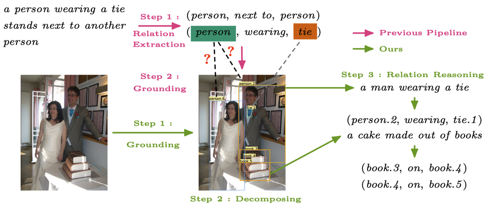

GPT4SGG: Synthesizing Scene Graphs from Holistic and Region-specific Narratives

Abstract
Learning scene graphs from natural language descriptions has proven to be a cheap and promising scheme for Scene Graph Generation (SGG). However, such unstructured caption data and its processing are troubling the learning an acurrate and complete scene graph. This dilema can be summarized as three points.
First, traditional language parsers often fail to extract meaningful relationship triplets from caption data.
Second, grounding unlocalized objects in parsed triplets will meet ambiguity in visual-language alignment.
Last, caption data typically are sparse and exhibit bias to partial observations of image content. These three issues make it hard for the model to generate comprehensive and accurate scene graphs.
To fill this gap, we propose a simple yet effective framework, GPT4SGG, to synthesize scene graphs from holistic and region-specific narratives. The framework discards traditional language parser, and localize objects before obtaining relationship triplets. To obtain relationship triplets, holistic and dense region-specific narratives are generated from the image. With such textual representation of image data and a task-specific prompt, an LLM, particularly GPT-4, directly synthesizes a scene graph as pseudo labels. Experimental results showcase GPT4SGG significantly improves the performance of SGG models trained on image-caption data. We believe this pioneering work can motivate further research into mining the visual reasoning capabilities of LLMs.
Task-specific (SGG-aware) Prompt: synthesize scene graphs based on the textual input for image data.
Example of GPT4SGG
Samples of COCO-SG@GPT
BibTeX
Please cite GPT4SGG in your publications if it helps your research:
@misc{chen2023gpt4sgg,
title={GPT4SGG: Synthesizing Scene Graphs from Holistic and Region-specific Narratives},
author={Zuyao Chen and Jinlin Wu and Zhen Lei and Zhaoxiang Zhang and Changwen Chen},
year={2023},
eprint={2312.04314},
archivePrefix={arXiv},
primaryClass={cs.CV}
}